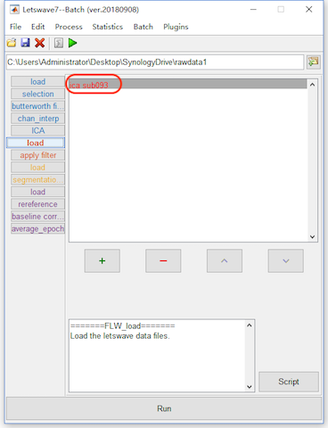

Run Batch Processing
By pressing the button “Run”, we can run the whole batch processing. In the step of Identify Artifact Component, we still manually select comp 1, comp 2 in the right panel in orange color and click the button OK. It needs more than 2 minutes for all the processing on the testing, in which the steps of computing ICA matrix is time consuming. In results, it would be exactly the same as the results of step by step operation.

Input/Output of the Batch Operation
The whole batch processing are divided into four sessions with difference colors. Each session is started by the step of load. The step of load may be added automatically, like in the step of apply ICA filter, segmentation (one dataset per event code) and reference in our operation. It can be added manually by selecting “File->load”.
In fact, the aim of automatically added load operation is specify the input datasets for the system. In each step, it is necessary to figure out the input and output of the processing. In the step by step operation, the input is the selected dataset(s), and the output is the new dataset(s) with a prefix added.
In the batch operation, if a step of operation is a simple 1-in-1-out, it is clear that the output of one operation would be the input of the following operation. Hence, the system does not need the users to specify the input.
However, some operations would be complicated, like segmentation (one dataset per event code) is 1-in-N-out, merge, ttest and ANOVA is N-in-1-out. Further Apply ICA filter is N-in-N-out operation since all the datasets will share the same ICA matrix and remove the same components. For these operations, the condition of the input and output would be complicated for the system, hence Letswave7 automatically adds a load operation to ask the users specify the input datasets.
Certainly, for some operation, if the input is not the output of the previous operation, users can also add a load operation manually by selecting “File->load”.
Intermediate Datasets and Prefix
In Letswave7, each step will generate a new dataset with a prefix. Sometimes, the intermediate datasets are useless but occupying the hard disk. Furthermore, the read/write operation on these the intermediate datasets would be time consuming. Hence, we can not save the intermediate datasets by not check the save checkbox in the lower right corner.
For the prefix, letswave7 assigns different prefixed for different operations, which it easy to know the operations history from the name of the dataset. If the users want to use their own prefix or even skip the prefix, they can specify the prefix in the prefix editbox in the lower right corner, or even replace it by empty to replace the input datasets, which is the nothing in the editbox, NOT the placeholder space.
In this case, we can set the prefix editbox empty and check out the save checkbox for the intermediate steps of Selection, butterworth filter, chan_interp, reference, baseline_correction. Since the name of the datasets have been changed, we need to correspondingly remove the error datasets and adding the correct datasets for the input in the steps of the load operation. By click the button “Run”, the batch processing would be faster than before. In results, the intermediate datasets do not exist anymore.

Save the Batch Processing
To reuse the batch, we can save the entire process. Click the save button in the toolbar of the batch module, and save the process as “P300.lw_script” for example. For the next time, we can click the open button to load the process. It should be noticed that since the processing object has been changed, the user need to change the input datasets in all the steps of load.
If the batch processing is frequently used, we can put the saved .lw_script file, like “P300.lw_script” in this case, into the path of the letswave installed “../letswave7/plugins/”. After that, restart letswave7 and the batch operation will come out in the menu of the batch in both the manager module and batch module.